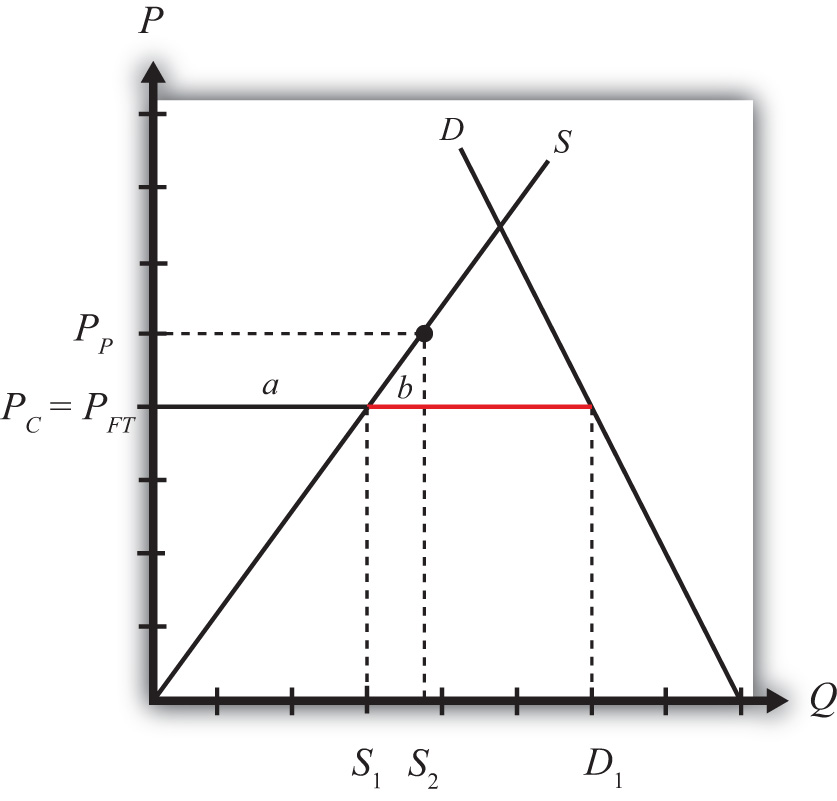

Domestic policies can affect trade in an industry for a country that is either an exporter or an import-competitor initially. In this example, we consider the price, production, and welfare effects of a production subsidy when the subsidized product is initially imported into the country.
We depict this equilibrium in Figure 8.2 "A Domestic Production Subsidy in a Small Importing Country". The free trade price is given by PFT. The domestic supply is S1, and domestic demand is D1, which determines imports in free trade as D1 − S1 (the length of the red line).
Figure 8.2 A Domestic Production Subsidy in a Small Importing Country
When a production subsidy “s” is imposed, the domestic producer price rises by the subsidy value to PP. Because free trade is maintained and the importing country is small, the domestic consumer price remains at PFT. Thus the effect of the subsidy in this case is to raise domestic supply from S1 to S2 while domestic demand remains at D1. As a result, imports fall from (D1 − S1) to (D1 − S2).
The welfare effects of the production subsidy are shown in Table 8.1 "Static Welfare Effects of a Production Subsidy". The letters in Table 8.1 "Static Welfare Effects of a Production Subsidy" refer to the areas labeled in Figure 8.2 "A Domestic Production Subsidy in a Small Importing Country".
Table 8.1 Static Welfare Effects of a Production Subsidy
| Importing Country | |
|---|---|
| Consumer Surplus | 0 |
| Producer Surplus | + a |
| Govt. Revenue | − (a + b) |
| National Welfare | − b |
Consumers are left unaffected by the subsidy since the domestic consumer price remains the same. Producers gain in terms of producer surplus. The subsidy causes the price producers receive to rise to PP, which in turn stimulates an increase in output from S1 to S2. The government, however, must pay the subsidy, and that means someone must pay higher taxes to fund it. The total amount of the subsidy payments is given by the product of (PP − PFT) in Figure 8.2 "A Domestic Production Subsidy in a Small Importing Country" (which corresponds to the subsidy rate) and the quantity produced, S2. Since the cost of the subsidy exceeds the benefits to producers, the net national welfare effect of the production subsidy is negative. Although one segment of the population benefits—namely, those connected with the import-competing industry—there remains a production efficiency loss, given by area b.
In the rest of the world, the small country assumption implies that this domestic policy (the production subsidy) would have no noticeable effects. Foreign prices would remain unchanged, and although their exports to this country would fall, these changes in trade volumes are too small to be noticed in the rest of the world. Thus the welfare effects on the rest of the world are said to be nonexistent, or zero.
Consider the domestic policy action listed along the top row of the table below. In the empty boxes, use the following notation to indicate the effect of the policy on the variables listed in the first column. Use a partial equilibrium model to determine the answers and assume that the shapes of the supply and demand curves are “normal.” Assume that the policy does not begin with, or result in, prohibitive policies. Also assume that the policy does not correct for market imperfections or distortions. Use the following notation:
+ the variable increases
− the variable decreases
0 the variable does not change
A the variable change is ambiguous (i.e., it may rise, it may fall)
For example, a production subsidy applied by a small country to an import-competing industry will have no effect on the domestic market price of the import good; therefore a 0 is placed in the first box of the table.
Table 8.2 Effects of a Production Subsidy
| Production Subsidy to an Import Industry by a Small Country | |
|---|---|
| Domestic Market Price | 0 |
| Domestic Industry Employment | |
| Domestic Consumer Welfare | |
| Domestic Producer Welfare | |
| Domestic Government Revenue | |
| Domestic National Welfare | |
| Foreign Price | |
| Foreign Consumer Welfare | |
| Foreign Producer Welfare | |
| Foreign National Welfare |